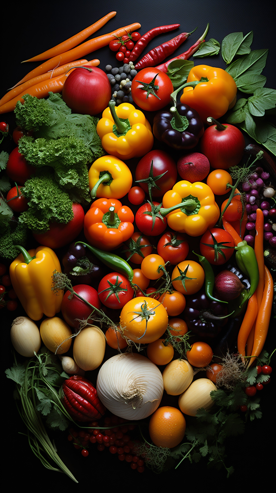

Bienvenidos a la Sociedad Gastronómica y Cultural de Bilbao
Este sitio web contiene información sobre nuestra sociedad, nuestras actividades y nuestra historia.

Eventos Destacados
-
Festival de Sabores
Un evento anual donde compartimos platos típicos y exquisitos de nuestra cultura. Volver al inicio de página
-
Concurso de Cocina
Competencia para los amantes de la cocina, abierta a todos los miembros de la sociedad. Volver al inicio de página
-
Talleres de Cocina

Actividades para aprender a cocinar los platillos más representativos. Volver al inicio de página